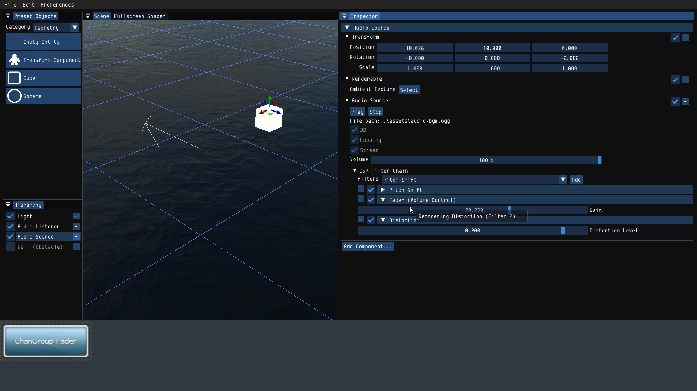

Nox Engine
Masters Group Project
- Language: C++
- Libraries: OpenGL 4.5, GLFW, GLM, ImGUI, FMOD (used by other team members: GLAD, Assimp, ImGuizmo, Luabridge)
- Demo Video: Link
- Code Repository:: Available upon request - will be made public once marking is over.
For the masters group project, we wanted to implement a game engine for 3D card games (e.g. Inscryption), but it ended up as an incomplete, generic game engine as of now. Our group of 6 members divided the work into distinct areas: ECS, rendering, animation, audio, resource management, and scripting, but this distinction was less clear further into development (i.e. everyone helped with several areas). I was responsible for the audio engine, UI and ECS (Entity-Component System).
Audio Engine
The reasoning behind implementing an audio engine is that audio is usually overshadowed by graphics, but it plays a major role in immersive gameplay. I based the structure of the audio engine on Guy Somberg's talk from ADC 18, which is easily extensible for more features and forms the basis of the audio engine for several shipped games. It uses FMOD as the middleware as per industry standard; spatial audio, audio occlusion and DSP filters were implemented. For the occlusion geometry, the user can generate a bounding box from the existing model to speed up development, or load in a model if more precise control is needed.

In terms of DSP filters, a subset of the built-in filters from FMOD are included, namely distortion, echo, fader, flange, limiter, pitch shift, and tremolo. The user can create a chain of these filters and reorder them after creation. The chain of filters will be applied during runtime by FMOD when the audio source plays.
UI
The UI is created using Dear ImGUI. Using the docking branch, the panels are "pre-docked" once the engine is launched. The ratio between each panel can be adjusted via mouse drag, and each panel can be relocated and grouped with other panels.

In the code repository, each panel is contained in its own function for clarity and extensibility for the overall UI.
ECS
My last major contribution is the ECS system. Although it is by no means efficient, it is functional. Each entity has a unique, monotonically increasing ID used for lookup using a STL map (hash tree). A major design decision is that an entity cannot contain another entity - this is the reason why ECS is employed in the first place - to reduce code complexity. However, this later proved to be not as intuitive from the end user's perspective (e.g. you should be able to group all sound sources into one parent entity).
Each component type is hard-coded as a C++ class and their `type_index` is used as the key for efficient lookup. An entity can contain at most one of each component type, so `entity->getComp